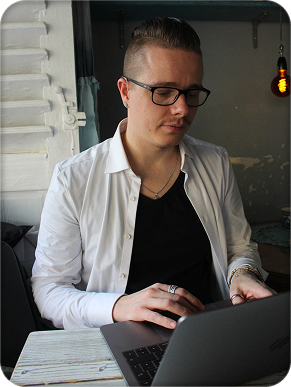

<section class="about-page">
  <div class="about-content">
    <div class="about-window">
      <h2 class="about-headline">Über mich</h2>

      <div class="about-body">

        <div class="box-left">

          

        </div>
        <div class="box-right">
          <p>Mit einem Hintergrund in Mediengestaltung und einem Blick für Struktur und Ästhetik entwickle ich
            Webanwendungen, die technisch durchdacht und visuell klar sind.<br><br>

            Ich liebe die Verbindung von Code und Design: sauberes HTML/CSS, performante Architekturen mit Angular und
            ein
            UI, das sich für Nutzer intuitiv und stimmig anfühlt.<br><br>

            Was mich antreibt, ist die Idee, aus Komplexität einfache und
            elegante Lösungen zu formen.
          </p>

          <p class="tech-claim">
            Technologien verändern sich – mein Anspruch bleibt:
          </p>

          <blockquote [class]="animationState">
            {{ currentSlogan }}
          </blockquote>


        </div>

      </div>
    </div>
  </div>


</section>